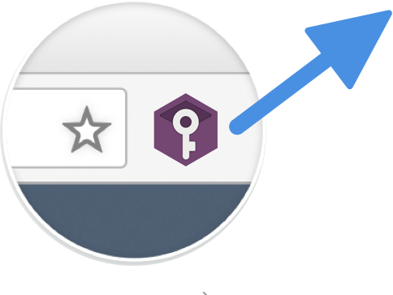
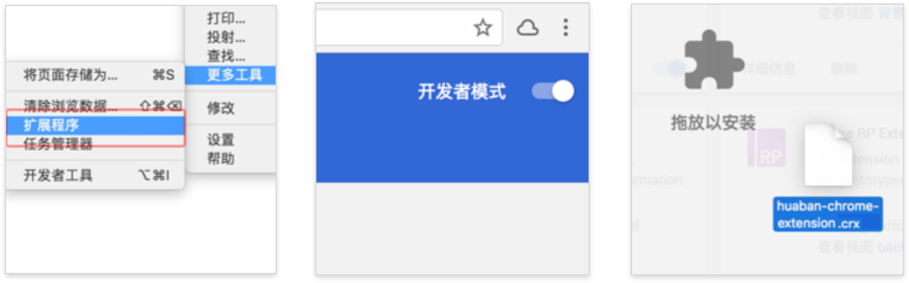

安装 Chrome 浏览器插件
你可以把难记的账号密码装进PassCan这个小工具，最重要的是你可以用它和团队同步密码，共享人无须知道密码就能快速登录！
使用「密码保存和填充助手」可以非常方便的保存，自动填充账号密码信息，是使用PassCan必不可少的助手

进行初始化设置
本地下载
你可以把难记的账号密码装进PassCan这个小工具，最重要的是你可以用它和团队同步密码，共享人无须知道密码就能快速登录！

请按照上面步骤安装
使用「密码保存和填充助手」可以非常方便的保存，自动填充账号密码信息，是使用PassCan必不可少的助手